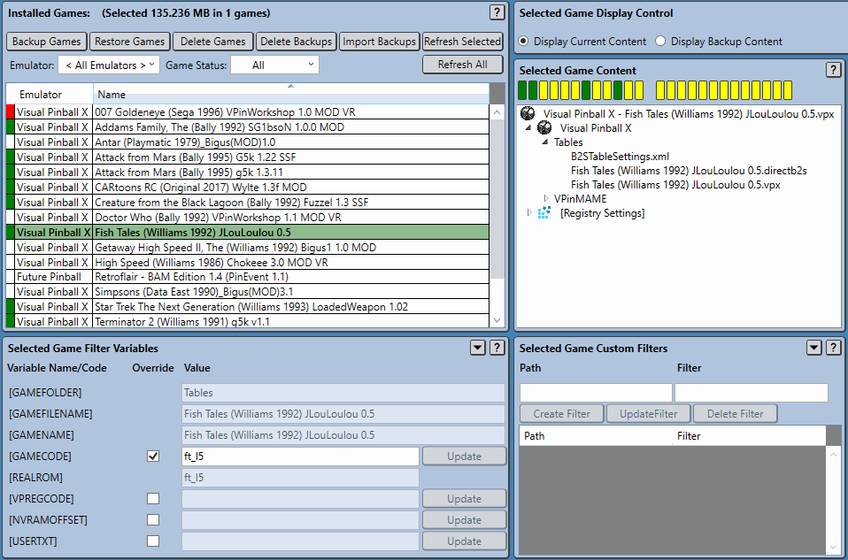
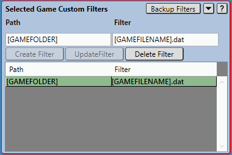

Selected Game Custom Filters Panel
Virtual Pinball Backup Manager - managing your backups, one game at a time
Virtual Pinball Backup Manager - managing your backups, one game at a time
At times there will be games for which the default VPBM filters do not pick up all associated emulator game content. This may occur for numerous reasons, such as scripts being written in a way that variables cant be extracted or games being written to make use of additional data files.
The Selected Game Custom Filters panel is designed to address this sort of situation by allowing users to add their own additional game specific filters directly targeting these missing files. These filters, once added are stored with the game, both in the backup file and in the Pinup System database.
Selected Game Custom Filters are only designed to work within the emulator directory structure corresponding to the given games emulator.
As custom filters are modified, other panels are immediately updated to reflect the changes.
Custom Filters are made up of two elements, shown below:
Both Path and Filter values may make use of VPBM path variables, described below to represent parts of the path/filename. The calculated values of these variables is displayed in the Selected Game Filter Variables Panel.
Three buttons are provided to allow users to Create new, Update or Delete existing custom filters. These buttons will become available when they are valid to use.
Once defined, custom filters will be considered along with the default filters for the games emulator and influence which files are considered part of the game.
The example below shows a new custom filter being added to Fish Tales (Williams 1992) JLouLoulou 0.5 to add an extra data file to the Tables directory. Other panels are immediately updated after the filter is added.
Should it be determined that a custom filter should be applied to all games for the current emulator, then the filter should be added globally via the VPBM configuration file, as described in Application Settings.
When custom filters are found to contain differences between the system and the backup, it is possible to perform a backup or restore of just the custom filters configuration - saving the need to perform another full game backup or restore.
When differences have been detected, the Selected Game Custom Filters panel border is highlighted in an error colour. The examples below shows the case a new filter has been created to search for files matching the pattern [GAMENAME].dat in the same folder as the game file resides.
Depending on whether the current or backup custom filters are being displayed, a Backup Filters or Restore Filters button is provided in the top right corner of the panel to allow the selected games custom filters to be backed up or restored.
Pressing Backup Values or Restore Values button will backup or restore the selected games CUSTOM filters.
Custom filters must be in synch prior to performing any individual file backups or restores in the Selected Game Content panel.